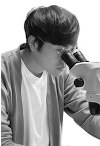

I am interested in understanding how developmental processes evolve and generate morphological diversity in organisms. My work fits into the field of evolutionary developmental biology (evo-devo), but expands more and more towards biophotonics and material engineering. Despite a few side steps, I always come back to my favorite model: the insect cuticle and its associated nano- or microstructures. Among other examples, I investigated the genetics underlying the origin of new pigmentation pattern in the wing cuticles in drosophilid flies, the emergence of ecologically-related trait as the density of leg hair bristles in water striders, and the evo-devo of wing scales's biophotonic structures in butterflies and moths.
BSc in Biology , Ashoka University
Postgrad in Biology (ASP), Ashoka University
MSc in Evolutionary Biology, Montpellier & Uppsala U.
A Pluviophile and a microbial lover. Love understanding the interactions in the world hidden under blind sight. Passionate about cooking and eating good food. Enjoying my newly found passion for gardening and my old habit of baking!

BASc in Taxonomy , Kyushu University
My research lies in complex plant-insect interactions. I obtained my bachelor from the School of Interdisciplinary Science and Innovation at Kyushu University where I studied the taxonomy of wasps that parasitize gall midges (Cecidomyiidae) and became fascinated by the diversity of galls and their associates. I am especially interested in the induction of galls and how insects acquire the ability to induce galls in the evolutionary trajectory. Away from the bench, I love being on stage and performing (tap dancing, playing the clarinet).
Javier G. Fernandez , Institute for Bioengineering of Catalonia | the Fermart Lab
Riou Mizuno , Okinawa Institute of Science and technology | Researchgate
Qifeng Ruan , Harbin Institute of Technology | Google Scholar | ResearchGate
Antónia Monteiro , National University of Singapore | the Monteiro Lab